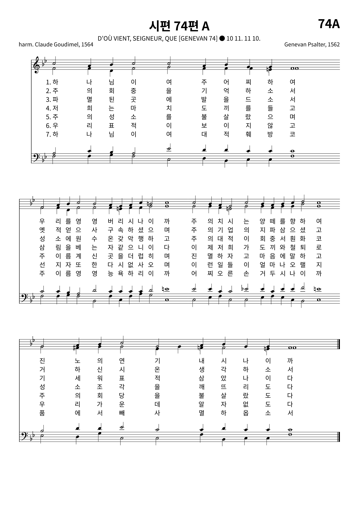

시편 74편 A
D’OÙ VIENT, SEIGNEUR, QUE [GENEVAN 74] · 10 11. 11 10.
곡조: Genevan Psalter, 1562 · 화성: Claude Goudimel, 1564 · 가사: 개역한글판 시편 74편 편역(AI 초벌 편역판 · 신학 감수 전) · 7절
시편 74편은 2곡으로 나누어 실었습니다: A B · 이 곡은 시편 74편 가사의 1~7번째 절입니다.
악보 PDF MusicXML(출력용) MusicXML(반주용, 전주·반복 포함) 개역한글 시편 74편 읽기
악보
← 시편 73편 목록반주 재생(준비 중)시편 74편 B →
가사
1절
하나님이여 주 어찌하여
우리를 영영 버리시나이까
주의 치시는 양 떼를 향하여
진노의 연기 내시나이까
하나님이여 주 어찌하여
우리를 영영 버리시나이까
주의 치시는 양 떼를 향하여
진노의 연기 내시나이까
2절
주의 회중을 기억하소서
옛적 얻으사 구속하셨으며
주의 기업의 지파 삼으셨고
거하신 시온 생각하소서
주의 회중을 기억하소서
옛적 얻으사 구속하셨으며
주의 기업의 지파 삼으셨고
거하신 시온 생각하소서
3절
파멸된 곳에 발을 드소서
성소에 원수 온갖 악 행하고
주의 대적이 회중서 훤화코
기 세워 표적 삼았나이다
파멸된 곳에 발을 드소서
성소에 원수 온갖 악 행하고
주의 대적이 회중서 훤화코
기 세워 표적 삼았나이다
4절
저희는 마치 도끼를 들고
삼림을 베는 자 같으니이다
이제 저희가 도끼와 철퇴로
성소 조각을 깨뜨리도다
저희는 마치 도끼를 들고
삼림을 베는 자 같으니이다
이제 저희가 도끼와 철퇴로
성소 조각을 깨뜨리도다
5절
주의 성소를 불살랐으며
주 이름 계신 곳을 더럽히며
진멸하자고 마음에 말하고
주의 회당을 불살랐도다
주의 성소를 불살랐으며
주 이름 계신 곳을 더럽히며
진멸하자고 마음에 말하고
주의 회당을 불살랐도다
6절
우리 표적이 보이지 않고
선지자 또한 다시 없사오며
이런 일들이 얼마나 오랠지
우리 가운데 알 자 없도다
우리 표적이 보이지 않고
선지자 또한 다시 없사오며
이런 일들이 얼마나 오랠지
우리 가운데 알 자 없도다
7절
하나님이여 대적 훼방코
주 이름 영영 능욕하리이까
어찌 오른손 거두시나이까
품에서 빼사 멸하옵소서
하나님이여 대적 훼방코
주 이름 영영 능욕하리이까
어찌 오른손 거두시나이까
품에서 빼사 멸하옵소서